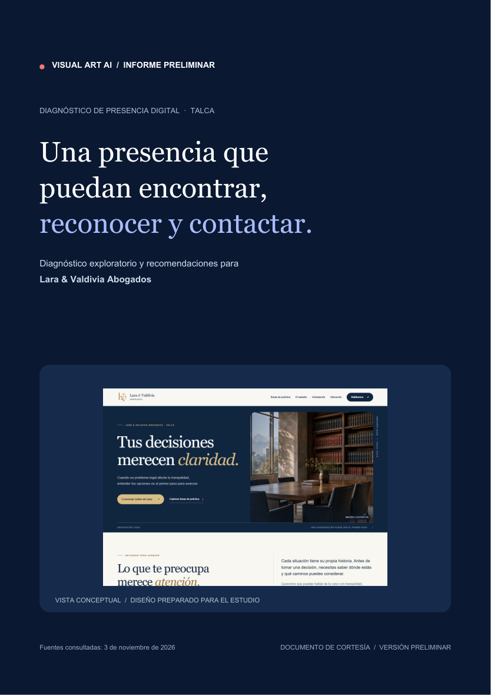

Una ficha que se puede completar.
Encontramos una ficha con el nombre del estudio. La vista consultada invitaba a agregar teléfono y sitio web; debemos confirmar titularidad y datos.
PROPUESTA PREPARADA PARA LARA & VALDIVIA ABOGADOS
Diseñamos una presencia que conecta visibilidad en Google y herramientas de IA, confianza en su marca y un camino claro para recibir y organizar consultas.
 VISTA DE LA WEB PROPUESTA · DEMOSTRACIÓN
VISTA DE LA WEB PROPUESTA · DEMOSTRACIÓN01 / EL PUNTO DE PARTIDA
Revisamos una búsqueda por nombre, la ficha pública de Google Maps y tres referentes locales el 3 de noviembre de 2026.
Encontramos una ficha con el nombre del estudio. La vista consultada invitaba a agregar teléfono y sitio web; debemos confirmar titularidad y datos.
En una búsqueda puntual, la respuesta de IA de Google describió a otra firma de nombre parecido. ChatGPT queda pendiente de una prueba directa.
Una web, perfiles y contenidos coherentes pueden ayudar a explicar sus servicios y facilitar el contacto con el estudio.
Reunimos los hallazgos, la metodología, las fuentes y nuestras recomendaciones para que puedan revisarlos con calma y compartirlos con su equipo.
10 páginas · Versión preliminar · Sin costo
INFORME PERSONALIZADO / VISUAL ART AI02 / UNA ESTRATEGIA CONECTADA
Conectamos los puntos de contacto para que una persona pueda descubrir al estudio, entender cómo puede ayudarle y solicitar orientación.
Información clara y una base técnica para Google, Maps y herramientas de búsqueda con IA.
SEO LOCAL · CONTENIDO · FICHAUna marca coherente y respuestas útiles que acerquen sus servicios a las personas.
IDENTIDAD · WEB · REDESUna vía sencilla para pasar de la duda a una conversación con el estudio.
WHATSAPP · FORMULARIOMedición inicial y, si lo eligen, seguimiento y mejoras continuas.
ANALÍTICA · SEGUIMIENTOLa visibilidad depende de plataformas externas: no se garantizan posiciones, menciones de IA ni una cantidad de consultas.
03 / LO QUE PREPARAMOS
Exploren la web adaptable, sus redes y aplicaciones corporativas. Son muestras para revisar junto al estudio.
04 / CONTENIDO Y CAMPAÑAS
Cuatro maneras de acompañar a las personas: contenido para descubrir, comprender y dar el primer paso. Estas piezas son demostraciones, no anuncios activos.
Para quien sabe que tiene una duda, pero aún no sabe cómo comenzar.
Lara & Valdivia Una primera conversación puede ayudarte a ordenar las preguntas. Guarda esta guía para cuando la necesites.
Ejemplo de contenido · sujeto a revisión jurídicaMensajes breves que permiten conocer al estudio y sus vías de contacto.
Ejemplo de promoción para presentar al estudio y dirigir a una página relevante.
Orientación legal con una mirada clara y cercana. Conoce al estudio y cómo solicitar una consulta.
Ejemplo de búsqueda que podría mostrarse ante consultas relacionadas con asesoría.
Lara & Valdivia Abogados
Dirección web por definir
Conozca al estudio y sus servicios. Infórmese sobre cómo solicitar una primera consulta.
La apariencia y activación dependen de la plataforma, la configuración y su revisión. Dirección y especialidades se confirman antes de publicar.
Fotografía generada y utilizada como ambientación; no representa la oficina real. Descargar textos de muestra ↓. Propuestas visuales y textos ilustrativos. Su publicación requiere confirmación de datos, revisión jurídica y aprobación del estudio. Campañas, inversión publicitaria y gestión de anuncios se cotizan por separado.
ESTRATEGIA EDITORIAL
Una persona no necesita el mismo mensaje cuando recién reconoce una inquietud que cuando ya está buscando asesoría. Estos son ejemplos, no categorías de personas identificadas.
Contenido que ayuda a ponerle nombre a una duda, sin asumir circunstancias personales.
Historias · educación generalGuías y carruseles que explican cómo prepararse y cuándo buscar orientación.
Carruseles · artículosInformación clara sobre el estudio, sus servicios confirmados y cómo trabaja.
Web · Google · perfilUn siguiente paso claro: contacto, recepción de la consulta y coordinación.
WhatsApp · formulario · agendaA personas que buscan orientación legal en Talca y sus alrededores, y a quienes investigan los servicios que el estudio confirme. Temas y audiencias se definen con el equipo antes de activar contenidos o campañas.
MÉTODO DE TRABAJO
Diseñamos un ciclo de trabajo con responsables, revisión y aprendizaje. El alcance de cada etapa depende del proyecto o servicio contratado.
Confirmamos servicios, audiencias, acceso a canales y punto de partida.
Priorizamos dudas, definimos mensajes y preparamos contenidos y piezas.
El estudio revisa la información y aprueba el contenido antes de salir.
Las personas pueden llegar a la web o contactar; el estudio atiende cada caso.
Revisamos los datos disponibles y proponemos ajustes según lo contratado.
↺ Volvemos a priorizar, crear y mejorar con lo aprendido.
Ejemplos de medición: impresiones y clics en búsqueda; visitas y clics de contacto; publicaciones y sus interacciones; consultas y citas registradas cuando exista seguimiento. Los datos dependen de las herramientas, accesos y configuraciones disponibles. No se garantizan resultados.
MEDIR PARA TOMAR MEJORES DECISIONES
Configuramos una base de medición en cuentas del estudio. Los datos disponibles permiten aprender dónde hay oportunidades; no todos los contactos llegan o se identifican por la web.
La configuración es inicial. El análisis y la optimización continuos se acuerdan por separado. Cómo funciona la visibilidad en Google ↗
05 / PROPUESTA DE INVERSIÓN
Comiencen con una presencia profesional y sumen apoyo mensual según las necesidades del estudio.
Una base digital para que las personas puedan encontrar al estudio, comprender sus servicios y contactarlo.
Información, especialidades y contenidos sujetos a validación y revisión jurídica del estudio. Requiere acceso autorizado a las cuentas. Una ronda de ajustes; dominio y alojamiento se cotizan aparte. La verificación de Google depende de sus procesos.
Conversar sobre el proyecto ↗Pueden contratar el proyecto por sí solo, sumar uno de estos servicios o combinar ambos. Cada mensualidad se cobra por separado después de su activación.
Desde el primer contacto hasta la coordinación de una cita, el equipo puede ver qué ocurrió y qué queda por hacer.
Incluye configuración de los tres flujos indicados. Hasta dos mensajes autorizados por contacto; consumos e integraciones adicionales se cotizan aparte. Canales sujetos a conexión y autorización. El estudio responde y atiende cada caso.
Consultar seguimiento ↗Mantener una presencia activa que explique sus servicios y responda dudas frecuentes.
Cada contenido se publica tras la aprobación del estudio. Incluye contenido orgánico; publicidad, producción audiovisual en terreno y respuesta de mensajes se cotizan aparte.
Consultar gestión de redes ↗Al comenzar: $298.000 por el proyecto y el primer mes de redes. Luego, $99.000 al mes mientras mantengan el servicio de redes.
El sistema de consultas se contrata aparte, solo si lo necesitan. La optimización SEO continua, dominio, alojamiento, publicidad y consumos de mensajería se cotizan aparte. Valores antes de impuestos aplicables.
La configuración de los flujos indicados está incluida en el mensual correspondiente. Accesos, plazos, revisión, renovación y cancelación se acuerdan por escrito. Las campañas de publicidad se contratan aparte. No se garantizan posiciones, menciones en IA, consultas ni clientes. La medición requiere configuración y consentimiento aplicables; no se deben enviar datos sensibles a herramientas de analítica.
06 / SIGUIENTE PASO
Revisemos juntos la muestra, confirmemos los datos del estudio y definamos el plan adecuado.